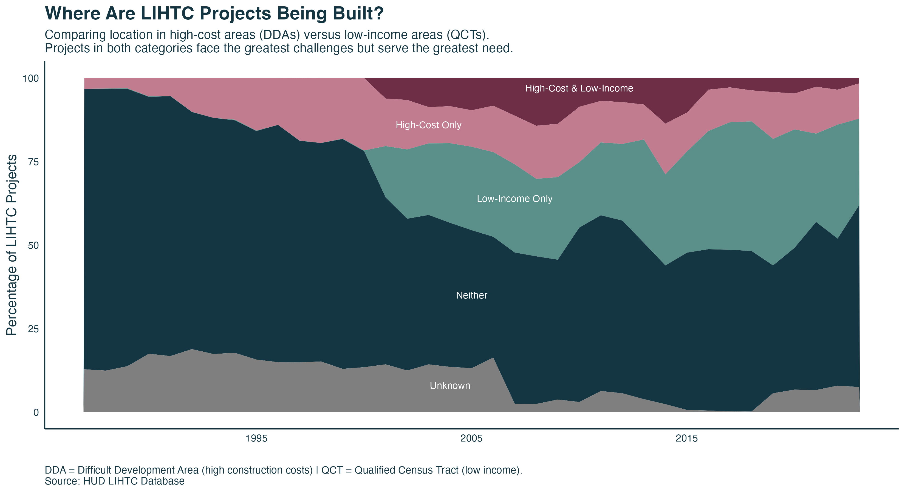
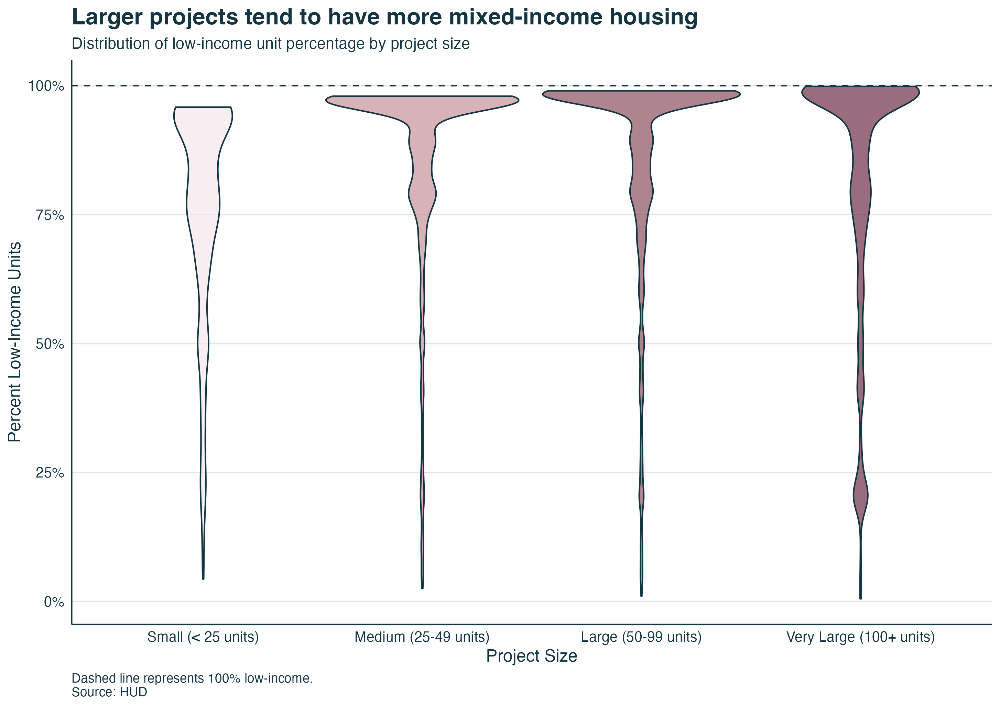

Low Income Housing Tax Credit Analysis
Exploring LIHTC allocations, trends, and geographic patterns
Historical Overview

History of LIHTC Program
Timeline showing the evolution and key milestones of the Low Income Housing Tax Credit program.
Animated Map

Geographic Animation
Animated map showing LIHTC allocations across states over time.
Interactive Visualization
National Allocations Over Time
Interactive chart displaying national LIHTC allocation trends across years.
Interactive Dashboard
State-by-State Comparison
Explore detailed state-level data with this interactive Shiny application.
DDA & QCT Analysis
Difficult Development Areas & Qualified Census Tracts
Analysis of LIHTC projects in DDAs and QCTs.

Distribution Analysis

Low Income Housing Distribution
Histogram showing the distribution patterns of low income housing units.
Statistical Visualization
Low Income Housing Violin Plot
Violin plot illustrating the distribution and density of low income housing metrics.

Interactive Visualization
Missing Data Analysis
Interactive visualization of missing data patterns in the LIHTC dataset.